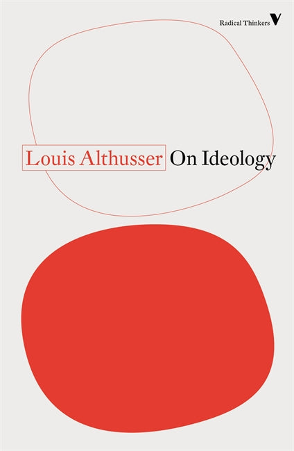
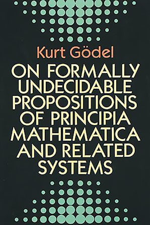
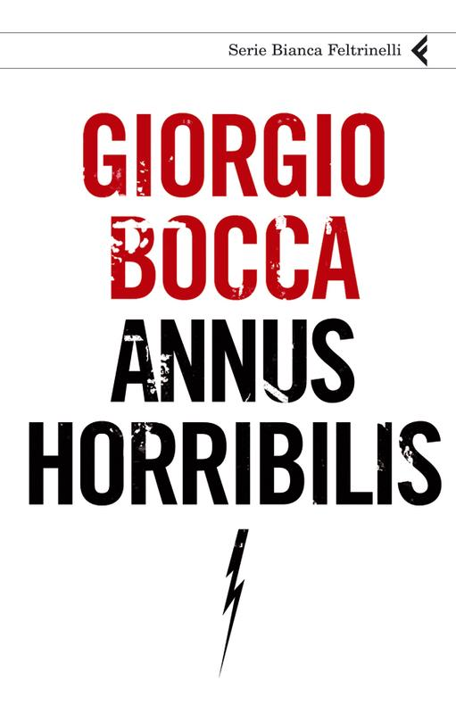
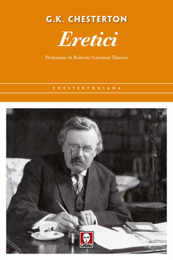

42:08 · 11 OPERE
È evidente?
Il filo del discorso
Il relatore difende il compito culturale del canale e interroga il rapporto fra evidenza, autorità e autonomia di giudizio. La disponibilità dei libri di Schweitzer e il valore dei testi rispetto alla impressione suscitata da un autore aprono il discorso; Euclide e Gödel diventano esempi della necessità di comprendere le ragioni di una affermazione.
Leggi la sintesi completaRiduci la sintesi
La riflessione passa poi alla responsabilità morale, attraverso il racconto di un maresciallo che avrebbe protetto internati ebrei, e alla lettura di un volume di Giorgio Bocca sul 2009, identificato probabilmente con Annus horribilis. I brani sul potere come teatro sono accostati dal relatore a vertici internazionali e vicende pandemiche. La parte conclusiva commenta l’incidente missilistico in Polonia, la controversia sul patrocinio del convegno POLI-COVID-22 e le parole di Marcello Gemmato sui vaccini. L’immagine della penna lanciata contro una finestra introduce il problema dei controfattuali; la chiusura richiama Chesterton e la difesa di ciò che appare evidente. La scheda conserva queste tesi come argomenti del relatore e aggiunge riscontri distinti sulle notizie, sulle attribuzioni librarie e sui limiti delle analogie scientifiche e storiche.
I libri nel discorso

Ideologia e apparati ideologici di Stato (Note per una ricerca)
Identificazione probabile
Note sul riferimento
Copertina della raccolta contenente il saggio: Copertina della raccolta On Ideology, Verso / Radical Thinkers, 2020, 192 pagine, traduzione Ben Brewster. Contiene il saggio del 1970 e altri testi.
Copertina autentica Verso bianca e rossa, Louis Althusser e On Ideology leggibili. Non è la copertina del fascicolo La Pensée del 1970 né una edizione italiana del saggio; il volume non viene identificato come quello eventualmente mostrato.
Althusser e gli apparati ideologici dello Stato espliciti; il titolo completo del saggio non è pronunciato.

Genesi
Note sul riferimento
Copertina: Einaudi, I libri della Bibbia / Einaudi Tascabili, 2000; introduzione di Steven Rose
Copertina dell’edizione autonoma Genesi, nella serie I libri della Bibbia, con introduzione di Steven Rose. Edizione scelta come riferimento iconografico; nessuna edizione è confermata nel video.
Genesi è nominata nel riferimento alle tradizioni elohista e yahvista; a 873 secondi è evocata la promessa dopo il diluvio.

The Decay and Restoration of Civilization
Identificazione probabile
Note sul riferimento
Copertina della raccolta: Prometheus · The Philosophy of Civilization · 1987 · raccolta in inglese
Copertina della raccolta Prometheus del 1987 che contiene The Decay and Restoration of Civilization e Civilization and Ethics. I due saggi, originariamente distinti, restano voci separate. L’edizione in inglese dell’immagine non è attribuita al video.
Schweitzer e l’opera sulla civiltà in due volumi poi riuniti da Fazi sono riconoscibili; il primo titolo specifico non è pronunciato.
Civilization and Ethics (Kultur und Ethik)
Identificazione probabile
Note sul riferimento
Copertina della raccolta: Prometheus · The Philosophy of Civilization · 1987 · raccolta in inglese
Copertina della raccolta Prometheus del 1987 che contiene The Decay and Restoration of Civilization e Civilization and Ethics. I due saggi, originariamente distinti, restano voci separate. L’edizione in inglese dell’immagine non è attribuita al video.
Il secondo saggio della Filosofia della civiltà è richiamato insieme al primo. Il riferimento riguarda le due parti dell’opera.

Gli elementi
Identificazione probabile
Note sul riferimento
Copertina: Bompiani · Tutte le opere, raccolta contenente Gli elementi
La copertina illustra la raccolta Tutte le opere, che include Gli elementi; non è attribuita al video.
Quinto postulato di Euclide esplicito; il riferimento agli Elementi è probabile poiché il titolo non è pronunciato.

Über formal unentscheidbare Sätze der Principia Mathematica und verwandter Systeme I (Sulle proposizioni formalmente indecidibili dei Principia Mathematica e di sistemi affini I)
Identificazione probabile
Note sul riferimento
Copertina: Immagine della edizione inglese Dover, 1992, viii + 72 pagine, traduzione di B. Meltzer, introduzione di R. B. Braithwaite. Articolo originale: Monatshefte für Mathematik und Physik, 38, 1931, pp. 173–198.
Copertina autentica Dover scura con motivi di punti verdi, nome Kurt Gödel arancio e titolo inglese chiaro. È il volume della traduzione con introduzione, non la copertina del fascicolo originale del 1931 o il diverso Gödel, Escher, Bach. L’ISBN cartaceo e la bibliografia KIT identificano la ristampa 1992; non è assegnata al filmato una precisa edizione mostrata.
Gödel, un saggio e omega-consistenza sono riconoscibili: probabile rimando al lavoro del 1931, senza titolo pronunciato.
The Shock Doctrine. The Rise of Disaster Capitalism (Shock economy)
Identificazione probabile
Note sul riferimento
Copertina: Copertina rossa dell’edizione canadese in brossura del 2008, Knopf Canada / Penguin Random House Canada, 672 pagine, ISBN 9780676978018.
Copertina autentica intera dal catalogo UBC, autore, titolo, sottotitolo e foro illustrato leggibili. La fotografia composita grigia del sito dell’autrice non è stata usata come copertina piana, e l’immagine Indigo non raggiungibile non è stata inclusa. Nessuna specifica edizione è confermata nel parlato.
Dottrina del caos e cognome deteriorato nella trascrizione automatica: possibile richiamo alla Shock Doctrine, non identificazione certa né attribuzione della registrazione del summit.
World Order (Ordine mondiale)
Identificazione probabile
Note sul riferimento
Copertina: Copertina Penguin Books della brossura del 1 settembre 2015, 432 pagine, ISBN 9780143127710. Prima pubblicazione dell’opera nel 2014.
Copertina dal catalogo del gruppo editoriale, con autore e titolo. Non è un’opera intitolata New World Order e la brossura non è attribuita al video.
Kissinger e un suo libro sull’ordine mondiale espliciti; il titolo World Order è un’identificazione probabile, diverso dalla formula nuovo ordine mondiale.

Annus horribilis
Identificazione probabile
Note sul riferimento
Copertina: Copertina Feltrinelli, Serie Bianca, 2010, ISBN 9788807171826. Il catalogo editoriale indica 160 pagine, la descrizione della Camera 158.
Copertina ufficiale intera, bianca, autore rosso, titolo nero e fulmine. La forma del file quarta non implica che l’immagine sia il retro: è stato controllato il fronte visibile. Edizione non identificata materialmente nel video; il pulsante dell’estratto sul sito non forniva un PDF accessibile.
Giorgio Bocca, anno 2009, pubblicazione 2010, capitoli Il tiranno che vuole essere amato e Il potere come teatro: titolo non pronunciato ma convergenza bibliografica.

La società aperta e i suoi nemici
Identificazione probabile
Note sul riferimento
Copertina: Armando Editore · Classici · 2018 · volume unico
Copertina autentica di riferimento, controllata visivamente. L’edizione non è identificata come quella usata nel video.
Platone viene presentato come nemico della società aperta: probabile allusione al libro di Popper, non citato con titolo completo o autore.

Eretici
Identificazione probabile
Note sul riferimento
Copertina: Lindau · 2016 · traduzione Cristina Cavalli, prefazione Roberto Giovanni Timossi
Immagine autentica dell’opera, controllata visivamente; l’edizione di riferimento non è attribuita al filmato.
Chesterton e il passo sulla necessità di difendere l’evidenza: riferimento probabile al paragrafo finale del capitolo XX di Heretics, senza titolo pronunciato.